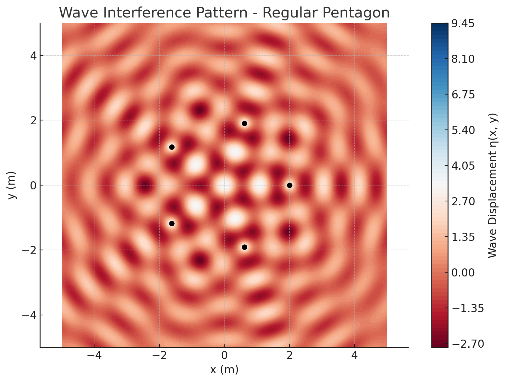

🌊 Interference Patterns on a Water Surface
🯠Motivation
Interference occurs when waves from different sources overlap. On a water surface, this is easily observed when ripples from multiple points meet, forming distinctive interference patterns. These patterns demonstrate how waves combine through constructive interference (amplifying) and destructive interference (canceling out).
Studying interference patterns helps us: - Understand wave behavior in a visual, intuitive way. - Explore wave superposition and the effects of source geometry. - Apply core physics concepts to real-world systems like sonar, optics, and wireless communication.
📘 Theoretical Foundation
✅ Single Disturbance Wave Equation
A circular wave from a point source located at \((x_0, y_0)\) is described by:
Where:
- \(\eta(x, y, t)\): water surface displacement at position \((x, y)\) and time \(t\)
- \(A\): amplitude of the wave
- \(k = \frac{2\pi}{\lambda}\): wave number (\(\lambda\) = wavelength)
- \(\omega = 2\pi f\): angular frequency (\(f\) = frequency)
- \(r = \sqrt{(x - x_0)^2 + (y - y_0)^2}\): distance from the source
- \(\phi\): initial phase
✅ Superposition Principle
When multiple sources emit waves, the total displacement is the sum of individual displacements:
Where \(N\) is the number of sources. All sources are assumed coherent and have the same amplitude, wavelength, and frequency.
🧪 Python Simulation
import numpy as np
import matplotlib.pyplot as plt
# Wave parameters
A = 1.0
wavelength = 1.0
frequency = 1.0
omega = 2 * np.pi * frequency
k = 2 * np.pi / wavelength
phi = 0.0
t = 0.0 # fixed time snapshot
# Grid definition
x = np.linspace(-5, 5, 400)
y = np.linspace(-5, 5, 400)
X, Y = np.meshgrid(x, y)
# Regular polygon vertices
def regular_polygon_vertices(n, radius=2.0, center=(0, 0)):
return [
(
center[0] + radius * np.cos(2 * np.pi * i / n),
center[1] + radius * np.sin(2 * np.pi * i / n)
)
for i in range(n)
]
# Single source wave
def single_wave(x, y, x0, y0, t, A, k, omega, phi):
r = np.sqrt((x - x0)**2 + (y - y0)**2)
return A / np.sqrt(r + 1e-6) * np.cos(k * r - omega * t + phi)
# Simulation function
def simulate_interference_pattern(n_sources, title="Polygon Interference Pattern", radius=2.0, t=0.0):
sources = regular_polygon_vertices(n=n_sources, radius=radius)
eta_total = np.zeros_like(X)
for (x0, y0) in sources:
eta_total += single_wave(X, Y, x0, y0, t, A, k, omega, phi)
plt.figure(figsize=(8, 6))
plt.contourf(X, Y, eta_total, levels=100, cmap='RdBu')
plt.colorbar(label='Wave Displacement η(x, y)')
for sx, sy in sources:
plt.plot(sx, sy, 'ko')
plt.title(f'Wave Interference Pattern - {title}')
plt.xlabel('x (m)')
plt.ylabel('y (m)')
plt.axis('equal')
plt.grid(True)
plt.tight_layout()
plt.show()
# Run simulations
simulate_interference_pattern(n_sources=3, title="Equilateral Triangle")
simulate_interference_pattern(n_sources=4, title="Square")
simulate_interference_pattern(n_sources=5, title="Regular Pentagon")
📊 Results & Analysis
🔺 Equilateral Triangle
- Symmetrical three-source setup.
- Interference peaks form between each pair of sources.
◼️ Square
- More complex grid-like pattern.
- Strong central interference and diagonal symmetry.
🔷 Pentagon
- Five-source symmetry creates rich and dense interference zones.
- Sharp wavefront overlaps near center.


🯠Key Observations
- More sources \(\Rightarrow\) more intricate interference.
- Geometry of sources (polygon type) dictates pattern symmetry.
- Constructive interference \(\Rightarrow\) high-displacement zones.
- Destructive interference \(\Rightarrow\) null displacement regions.
✅ Deliverables Summary
- ✅ Python simulation for point sources placed in regular polygons
- ✅ Mathematical derivation of wave equations
- ✅ Graphical results showing interference regions
- ✅ Clear explanation of wave superposition and pattern formation
Let me know if you want this as .ipynb, animated, extended to 3D, or exported to PDF.